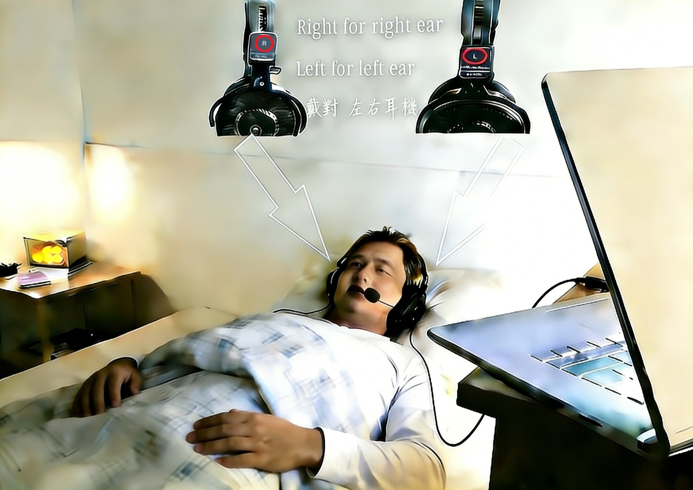
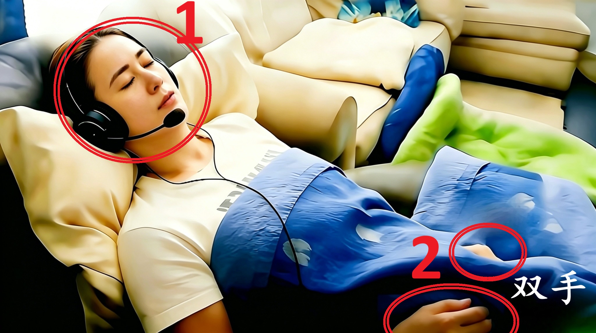
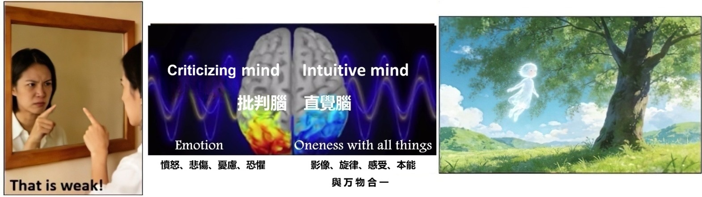
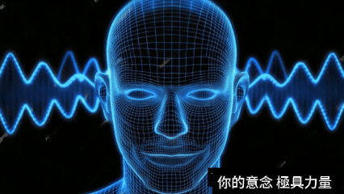
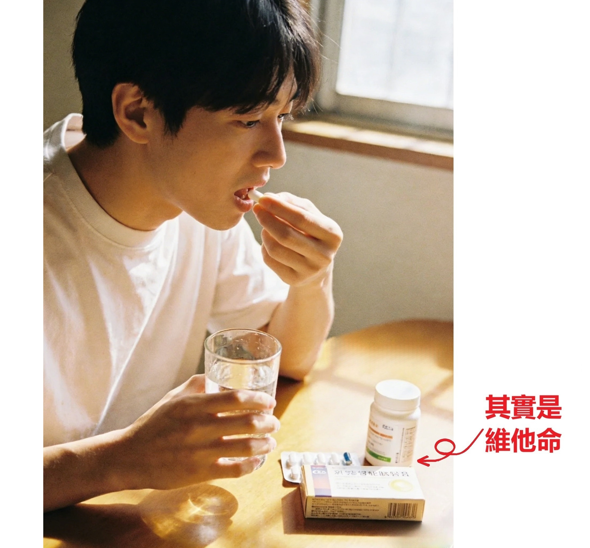
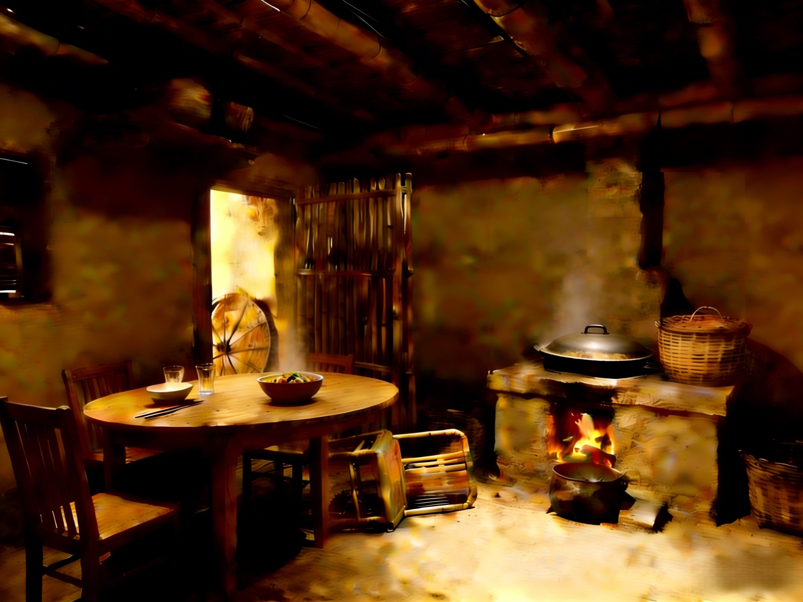
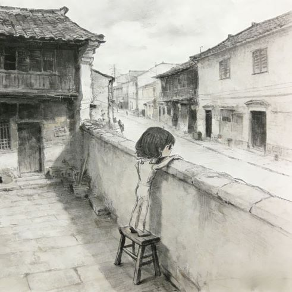

(1)
先進行 1~2 小时 "電腦屏幕" 面對面 深度访谈：
了解你希望解開的困擾、心结、與疑惑
(2)
展開 1~2 小時 催眠引導：進入潜意識状態，
連接内在智慧，探尋问題根源與答案
(3) 回顧 & 總结：整合收穫，清晰后續方向
全程线上视频進行 (Zoom/ 腾讯会议)，無需线下奔波，
在熟悉的家中房间里，享受專属于你的定制身心灵疗愈。

催眠冥想是 "放鬆 + 高度專注" 的特殊意識状態（不是睡着），你全程保持意識與自主控制，
被動跟随引導，更容易進入深層放鬆、觸達深層潜意識。
被催眠者在極度放鬆下，説话音量會變得極低，請一定、千萬、務必讓麥克風擺在嘴巴附近。
鏡頭必須清楚看見你的 全臉 及 雙手。

在日常生活中，左脑担任着 理性逻辑 & 质疑批評 的角色，并會随着 情绪起伏 而一直 波動不定；
而右脑所蕴含的 纯真直觉，一直被左脑的 過度理性 所壓制。
久而久之，你渐渐忽略了右脑的聲音，也遗失了内在的本真感知。

催眠的目的，正是引導你的左脑慢慢安静下来，卸下過度的分析防禦，讓右脑的智慧浮出表面，
讓你重新连接内在的力量（潛意識）、認識真正的自己。
Nikola Tesla 说，宇宙的一切都是 能量、频率、震動。

你的脑波、你的意圖，都是能量頻率信號；
你潜意識里的每一個念頭，都會被身體的每一個细胞默默聆聼、如實回應。


小孩不想上学时，跟妈妈说發燒頭疼了，他的體温就真的高起来了。
醫生開維他命給你，你以爲是藥，結果你的病好起來了。


你的身體是一個宇宙，而你，就是这個宇宙的神。
你身體的每一個细胞都深爱着你，無條件地對你唯命是從。
有一位妻子，與丈夫早已形同陌路。
當她确诊癌症后，在心理咨询中发现了一個真相 — 她的潜意識里，其實不愿这个病症消失。
因为只有在生病后，丈夫才會放下隔阂，送她去看醫生、说上寥寥數语，
這個久违的互動，成了她潜意識里不愿放手的"温暖"。

而這份 "潜意識" 的想法，與她的 "意識" 完全相悖。
當被點破时，她的意識瞬间崩溃，
疯狂破口大骂："神经病啊！哪有人會不想康复的！！！！"
你知道 你潜意識里 真正的想法吗？

(1)
先進行 1~2 小时 "電腦屏幕" 面對面 深度访谈：
了解你希望解開的困擾、心结、與疑惑
(2)
展開 1~2 小時 催眠引導：進入潜意識状態，
連接内在智慧，探尋问題根源與答案
(3) 回顧 & 總结：整合收穫，清晰后續方向
用心看著下方的圖像，停留一分鐘，想象自己在这间老屋里，
静静感受内心泛起的情绪，试着描述你在圖像中觀察到的、以及你的直覺感受。
然後才往下划，看看你属于下述三種個案中的哪一種。
(source: Candace Craw-Goldman website)

個案 1：
這是一個老舊的房子。
里面有一個炉灶、幾件家具，
桌子上擺着一些餐具。
催眠師：就這些吗？
個案 1：嗯~~ 地上還有一把翻倒的椅子。
我想應该就這些了。
哦！等一下，门外还有一個水車輪子。
個案 2：
我在一间老屋里。
地上是夯土地面，天花板上有木梁。
炉灶里生着火，我觉得鍋裏是海带炖排骨。
屋里有简单的家具，桌上有碗筷水杯。
地上有一把翻倒的椅子，看起来像是有人匆忙離開時弄翻的。
门外有一個木制的水車輪。
催眠師：你還注意到别的什麽吗？還能再多描述一些吗？
個案 2：儘管屋内爐火熊熊燃燒，但不知爲何，心底掠過一絲蒼涼感。
或許是因爲那把翻倒的椅子。。。。。
这里除了我，没有别人，我觉得有點孤单。
個案 3：
我在爷爷以前那间鄉下房子里。
现在是冬天，我坐了很久的车，刚到这里。
爺爺做了土豆燉五花肉，太香了！
我们準備摆桌子吃晚饭，就聼到那頭牛痛苦的叫声。
爷爷急着去查看，匆忙间把椅子都碰翻了。
催眠師：那頭牛在哪里？
個案 3：哦，它就在房子旁邊那個牛棚里。
它應该是要生小牛了。
我其實還记得那頭牛，它叫来福。
我真的很想念鄉下生活，也特别想念爷爷。
個案3 也可能說：
就像健身房教練與客戶的關係：客戶必須“願意”按照教練指引、主動完成訓練。
教練要求做10下俯臥撐，客戶就要認真投入、確實執行。
如果自身不願行動，就算教練再專業，也無法幫你達成健身目標。

同理，催眠師在引導個案時，也需要個案充分配合、全心信任、徹底放鬆。
只有當個案“願意”讓自己的理性左腦安靜下來，才能讓意識轉爲 θ (希塔) 腦波狀態，潛意識才能顯現出來。
註：θ (希塔) 腦波狀態，每天都會自然發生兩次，
(1) 臨睡前：全身放鬆、即將入睡時的意識狀態，此刻你仍醒著，但左腦已沉靜下來；
(2) 剛醒時：剛從睡眠邊緣醒來時，感覺身體還很重、未能快速動彈；此時左腦仍一片空白、尚未啓動批判功能。
有些人聽過、讀過量子催眠案例中的神奇經歷，便對自己的催眠體驗充滿期盼，
如同孩子攀上牆頭，眼巴巴盼著新鮮有趣的事發生。
請勿過度期待，否則左脑持续亢奋活躍，难以真正静下心来。

讓你的批判左腦坐下、靜靜躺著，聽聽你的潛意識説什麽。
列清单： 回想人生中所有渴望得到解答的事情，將其一一写下，我们會在面谈時讨论你這份清单。
環境：
人民币 2,222
臺幣 9,878
港幣 2,566
美金 329
付款后即可预约具体日期
(來源: YouTube 簡單易懂的雙縫干涉實驗 )
結論炸裂，多的是 你不知道的事